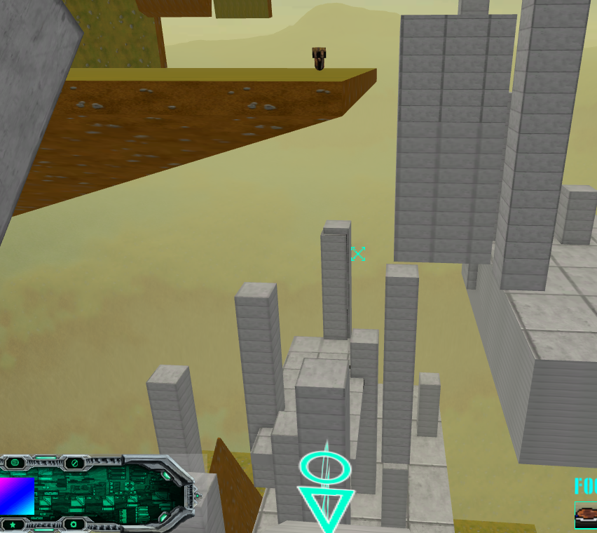
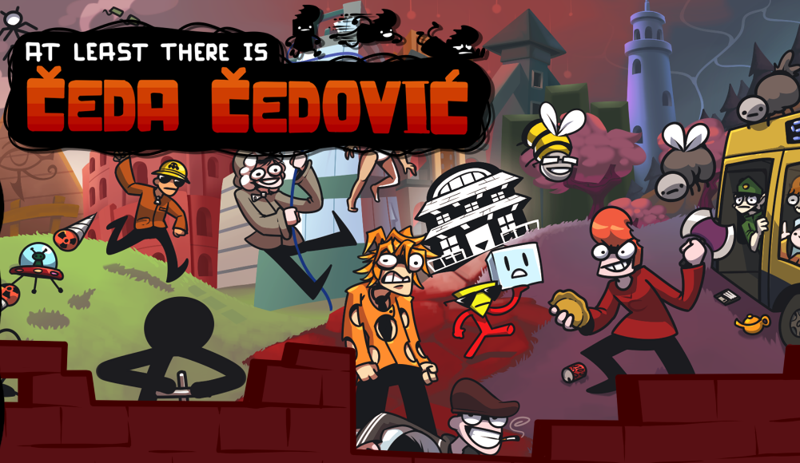
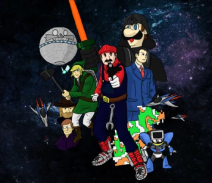
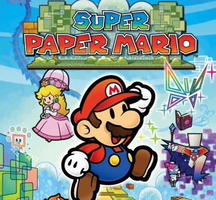

Links:
Itch.io PageGames Page
Main Page
"Reviews":
Let's Go! Thingio!: Side A Version N/A | WTF | Aug 16, 2006
This game has inspired practically everyting I do in terms of development. It's single-handedly responsible for Wario Destroys America along with my brand of humor. I can only hope to capture the qualities of this gem and it consistently impresses me to this day. A must play. MFGG.NET DL (8 MB) |
|
|  | THIS IS THE GAME NAME Version N/A | 3D Platformer | ???
Short but sweet platformer where you descend a fucked up structure. Seems dumb at first, but going down is extremely enjoyable and replayable. Not very condusive to speed-running despite having bunny-hopping n' stuff. Still, very much worth the little time it takes and you'll walk away wanting more. Has some multi-player elements which make it a lot of fun to play. I've played it with a few friends once or twice and it's great. N/A, DL lost. Will upload a back-up. (? MB) |
 |
League of Piss Version N/A | Bullet Hell | Dec 18, 2017
Very fun point n' click + bullet hell game. Bosses are a huge highlight. Keeps short and to the point if you know where to go, can be confusing at times though. Bosses are super fun and engaging, Clammy Pottel and Bean Weird are the best imo. A very good 1-2 hour experience. Game Page (195 MB) |
|  | At Least There is Čeda Čedović Version v1.04(?) | 2D Platformer | Aug 5, 2020
A Super Mario World-esque platformer that pays homage to a ton of games. Suffers from some particularly annoying bosses and bad levels, but on the whole it's a solid platformer. Very funny cutscenes and fulfilling 100% which makes you want to complete it. Really good music too. Well worth your time. Game Page (270 MB) |
|  | 9 10 doh nightmare Version N/A | 3D Adventure | ???
An amazing platformer with tons of content, a really funny story, and just good platforming. It's about 3-4 hours long on your first run, there's some jank but it's to be expected. If you're not very well acclimated to the jank of old games, I'd suggest playing the enhanced version. Original Game Page (8 MB) Remake Game Page (6 MB) |
 | Super Paper Mario Version N/A | 2D/3D Adventure | Apr 9, 2007
A pretty okay platformer with some heavy puzzle elements but amazing story. It's about 12 hours long on your first run, a lot of that is due to the huge amount of fetch quests and padded out hub-world. Along with the very very slow movement, mainly one-dimensional puzzles, slow and encumbersome menus and pixl system, this game should mainly be avoided. Instead just watch someone play it, it has a lot of charm but playing will wear that charm out thin. Wikipedia Page, no DL since it's a Wii game. |